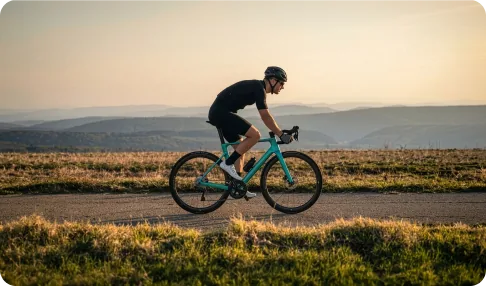
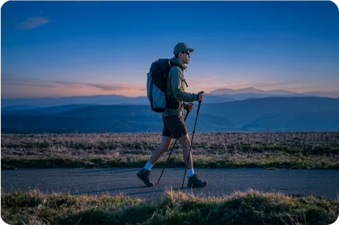
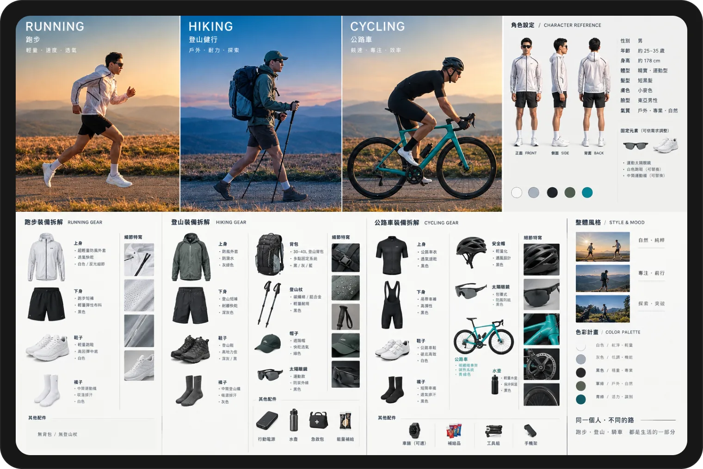
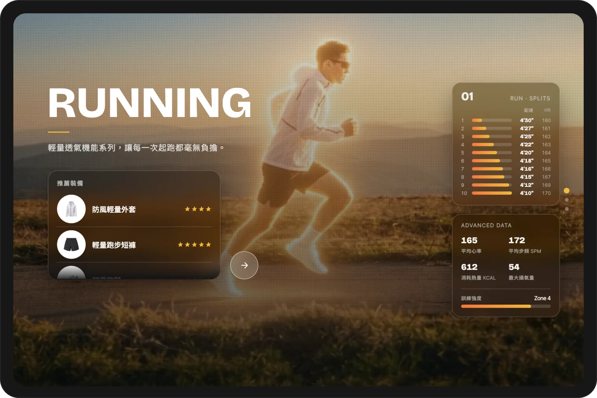

Campaign Page
Scrolling Website
類型AI · 活動頁面
使用工具


Problem
一直很想嘗試卷動式頁面（scrollytelling）的華麗視覺效果，於是把自己本身熱愛的跑步、騎車、爬山三項興趣結合起來，構想成一個品牌活動頁面。目標是透過視覺構圖的一致性與持續進步的數據 UI，讓觀看者在瀏覽過程中感受到熱血感，進而產生想開始訓練的念頭，甚至順勢點進去挑選、購買所需的推薦商品。

Process
影片素材的產出則分兩階段：先用 ChatGPT 針對跑步、騎車、爬山三種運動情境生成設定圖，包括攝影機角度、角色配件與場景設定；再透過 Higgsfield 的 Seedance 2.5 model 依據這些設定圖渲染出最終影片。
初期嘗試以「一幀畫面對齊一次滑鼠滾動」的方式做卷動效果，但實測後發現這樣會讓 UI 的呈現效果變差，因此調整為「滑動一次播放一段畫面」的方式，讓動態轉場更流暢自然。
Result
完成後的 Campaign Page 呈現出具備一致視覺構圖與熱血氛圍的卷動式活動頁面，三項運動的動態影片搭配持續進步的數據 UI，成功營造出想開始訓練的情緒感受。雖然轉場效果跟原本設想的仍有些落差（且製作到後段 Token 也用盡了），但整體看久了效果也算是可以接受，達成了頁面的核心體驗目標。

Reflection
這個專案是一次高強度的多工具整合嘗試——從 ChatGPT 生成設定圖、Higgsfield/Seedance 渲染影片，到卷動邏輯的反覆調整，讓我實際碰到不少「理想效果 vs. 實際限制」的落差（無論是 UI 表現還是資源／Token 的限制）。這個過程讓我更清楚在做視覺化與互動專案時，需要在創意構想與技術／資源限制之間持續拉鋸取得平衡，也是這次嘗試中最寶貴的實作經驗。